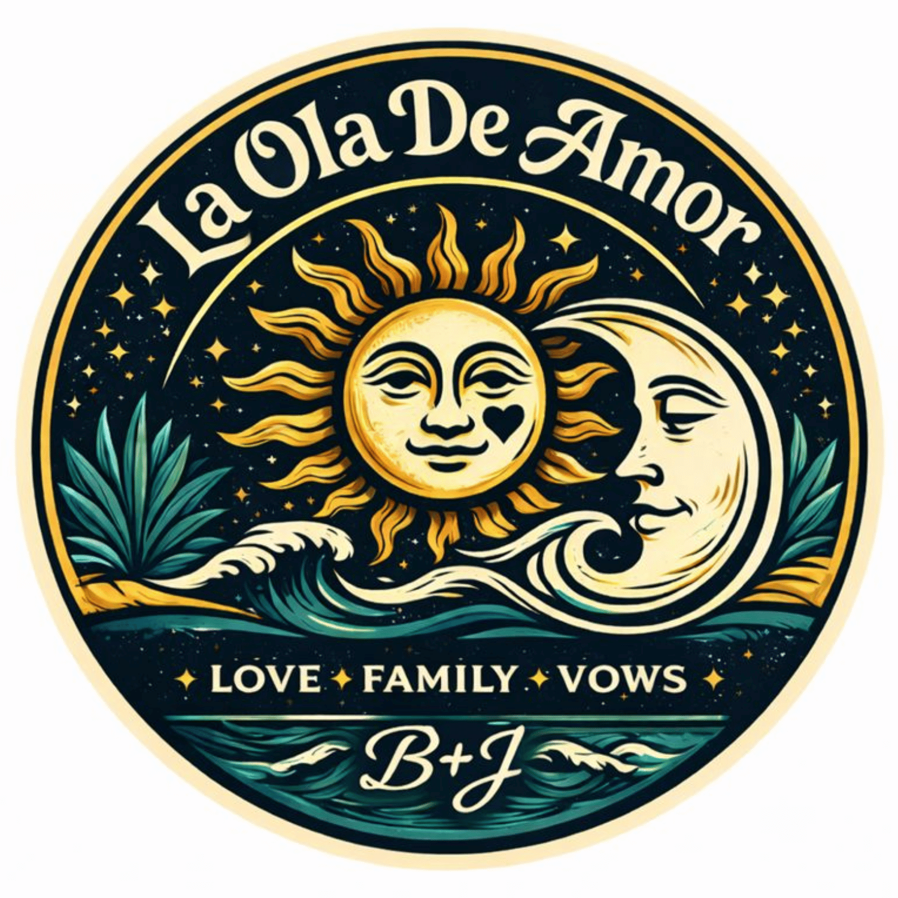
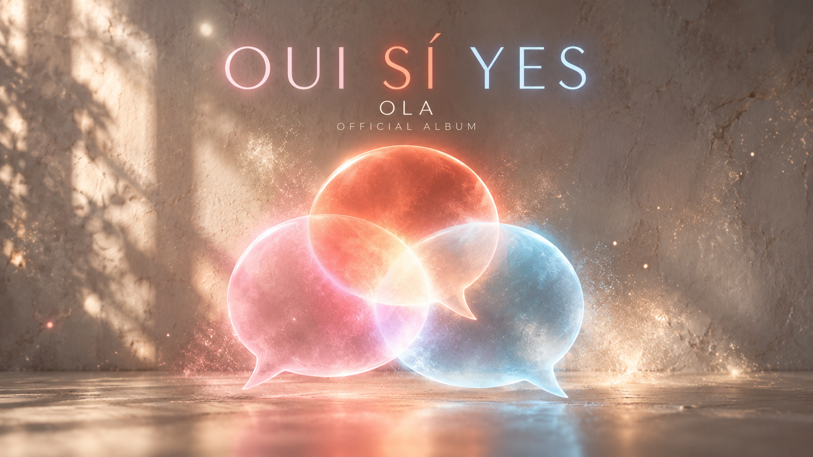

WELCOME TO OUR UNIVERSE
Our worlds.
One home.
Love, cinema, and memories. Music, and the waves still taking shape. Choose a space and step into its world.
Explore OLA HQWorlds
Four entrances. Each its own world.
La Ola de Amor
Brianna + Jonathan. A journey through love, places, and the memories along the way.
Enter world ↗
Blockbuster Wave
The film collection: favorites, reviews, artwork, and the stories around what we watch.
Enter the gallery ↗


Our Polaroid Wave
Instant film, real moments. Six collections of faces, nights, places, and life in motion.
Explore the portfolio ↗
Wave 26
OLA. Albums, songs, and experiments at the intersection of feeling and sound.
Enter the music world ↗Around the home
A workbench, a museum, and a way back home.Tools
A small creative workbench: palettes, a focus timer, and reusable prompts.
Open Tools ↗Archive / Version Museum
The story of how our home grew, and the editions that came before.
Visit the museum ↗Publish / Access
How the worlds connect, and where sign-in is needed.
About public access ↗